Style Guide
I wanted to design a fundraising site that had an energetic feel to it. I wanted people to feel excited and happy when they came to the site. I created three style tiles for Blocstarter and took advantage of user testing to select the one that had the most positive response.
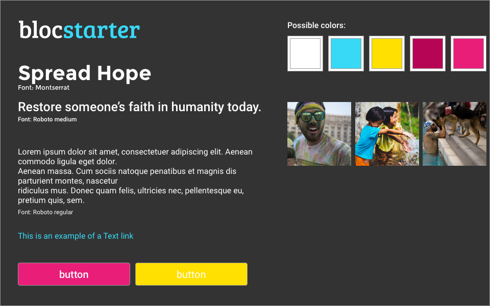 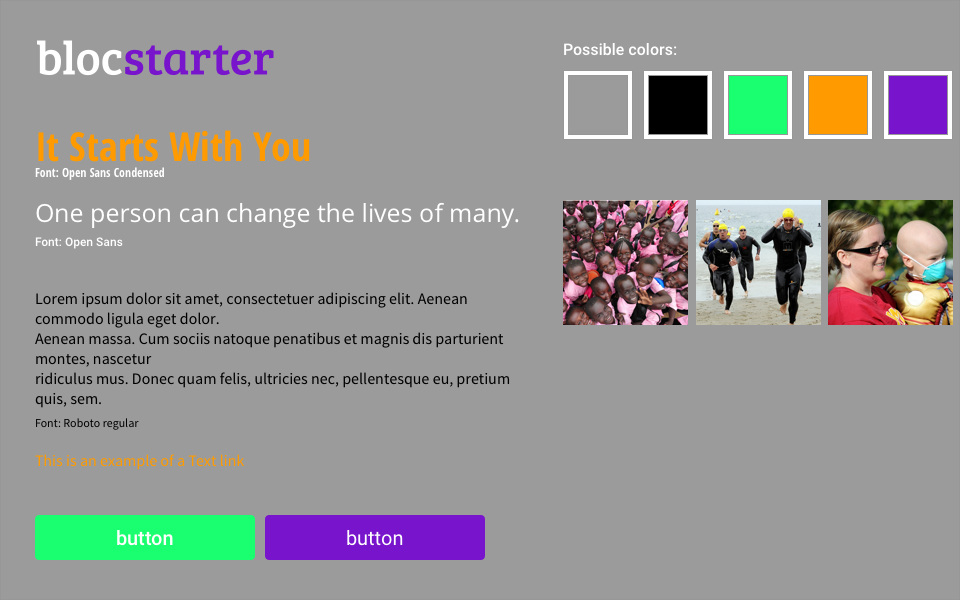 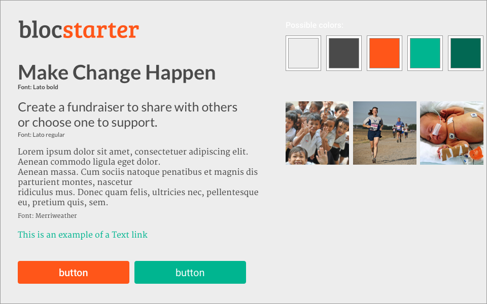Building the experience
One of the first things I thought about was onboarding. I didn't want to lose anyone with a difficult or lengthy onboarding process, but a certain amount of information gathering was necessary. I researched many different fundraising sites, even setting up accounts with a few so I could experience their onboarding flow. After extensive study, I began designing my mockups.
New User
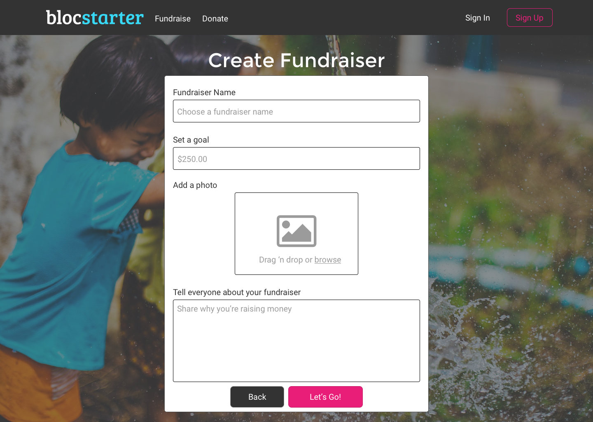 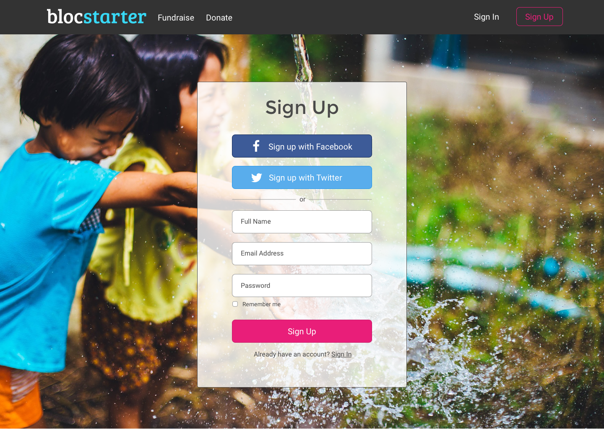Returning User
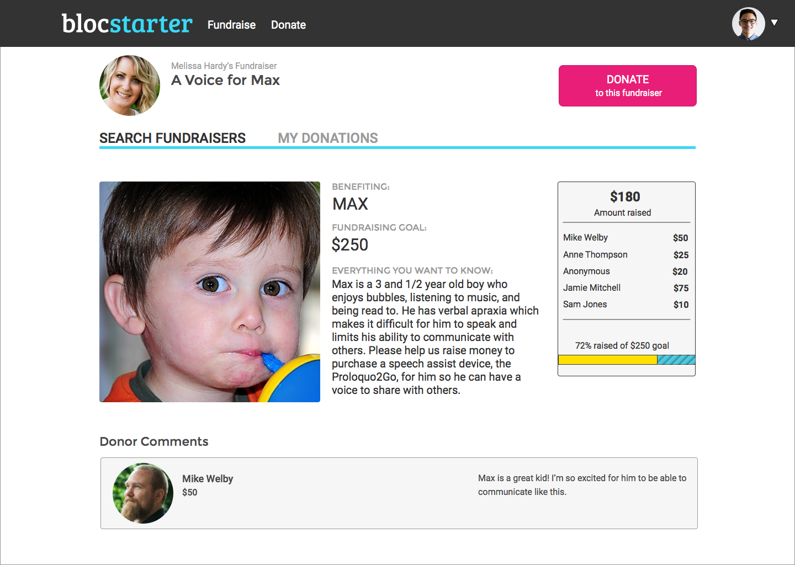 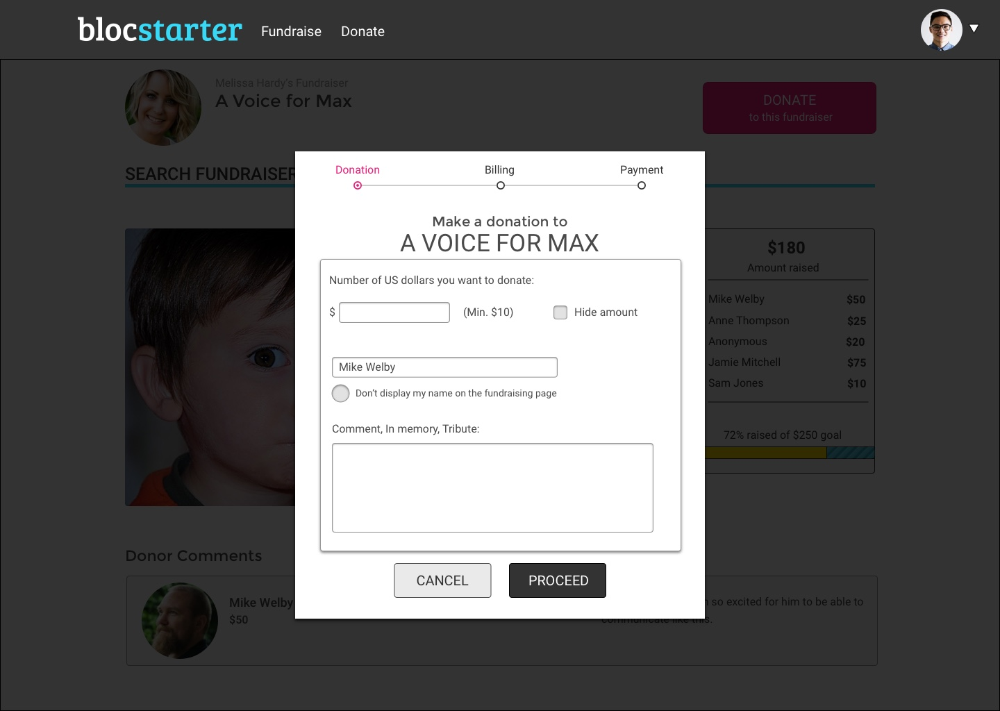 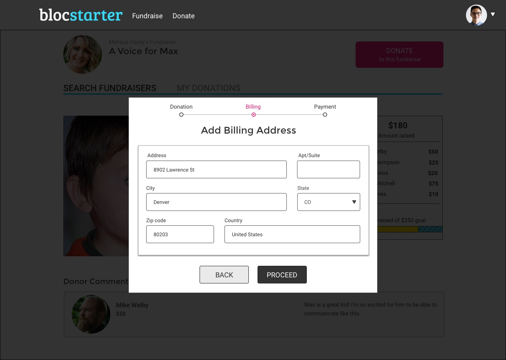 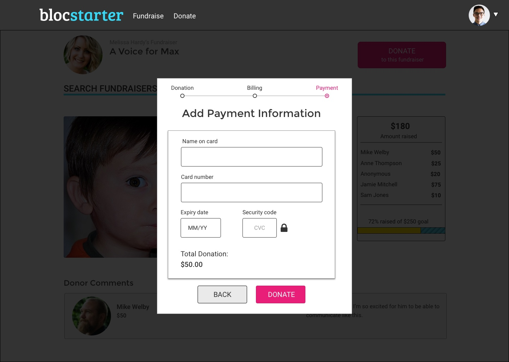 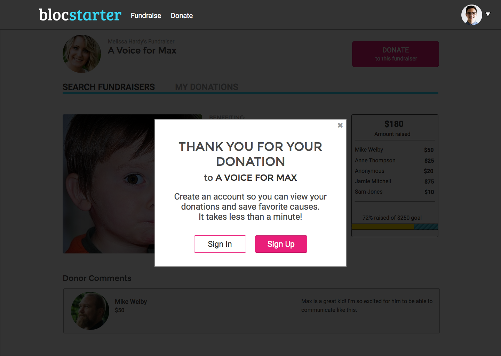The finished product
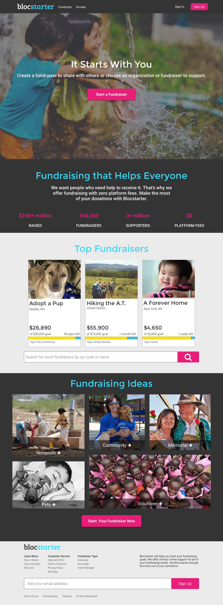